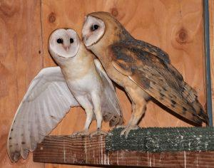
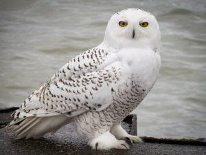
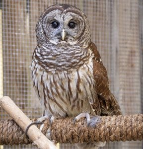
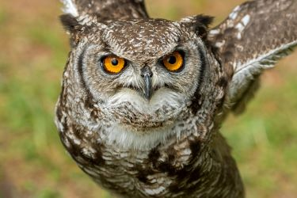
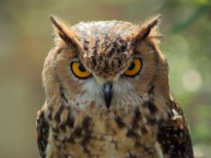
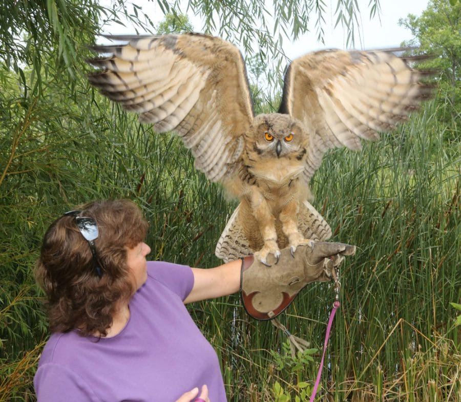
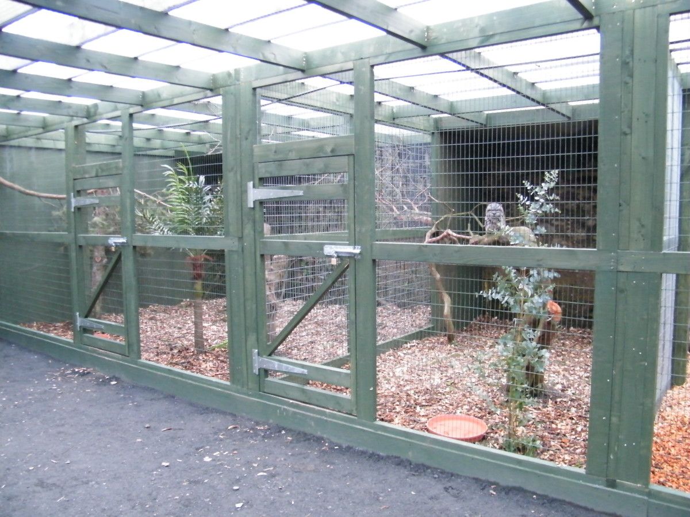
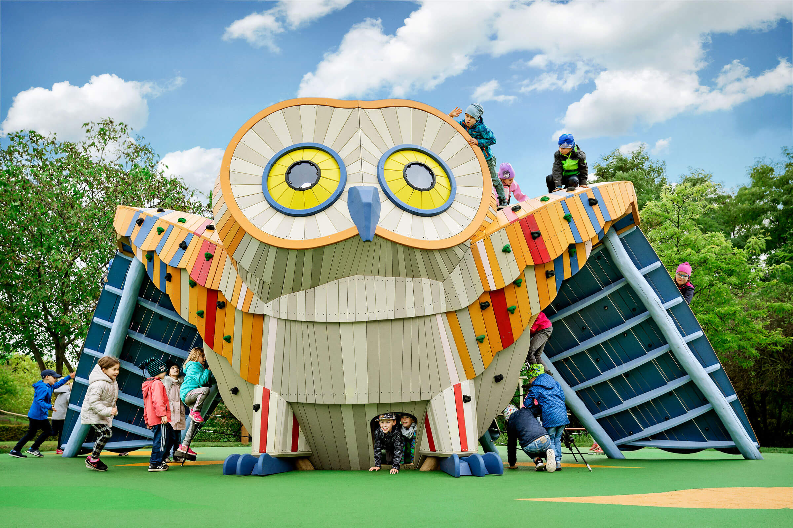

Here are some of the owls that we have in our sanctuary.
Barn owls are medium-sized owls with distinctive heart-shaped faces, long legs, and a white or light-colored underside. They are known for their silent flight and exceptional hunting skills, primarily preying on small mammals like rodents.

Snowy owls are large, white owls with striking yellow eyes and black markings. They are native to Arctic regions and are well-adapted to cold environments. Snowy owls primarily hunt during the day and feed on small mammals and birds.

Barred owls are medium to large-sized owls with distinctive brown and white striped plumage. They have dark eyes and a rounded head without ear tufts. Barred owls are known for their loud, hooting calls and primarily inhabit wooded areas, preying on small mammals, birds, and amphibians.

Eagle owls are among the largest owl species, characterized by their powerful build, prominent ear tufts, and striking orange or yellow eyes. They have a diverse diet, feeding on mammals, birds, and reptiles, and are known for their strong hunting abilities and adaptability to various habitats.

Great horned owls are large, powerful owls with distinctive ear tufts that resemble horns. They have a mottled brown and gray plumage, yellow eyes, and a white patch on their throat. Great horned owls are versatile hunters, preying on a wide range of animals, including mammals, birds, reptiles, and amphibians.

Our owl sanctuary offers a range of facilities to ensure a comfortable and educational experience for our visitors. These include:

A dedicated space for learning about owls, their habitats, and conservation efforts through interactive exhibits and presentations.

Spacious and secure enclosures that mimic the natural habitats of various owl species, providing them with a safe and comfortable environment.

A fun and engaging area for children to play and learn about owls through themed activities and games.